Every idea explained from scratch, every derivation done line by line, every formula with a memory hook, and Razavi-style practice questions (each with its own figure and a full worked solution).
Part 0Warm-up: MOSFET square law (with signs), the VTC, noise margins, the maths you need
Part 1 · L23How the inverter works, the five regions A–E, deriving $V_{IL}$ and $V_{IH}$
Part 2 · L24Switching threshold $V_{th}$, sizing, the symmetric inverter, layout, the inverter as an amplifier
Part 3 · L25Load capacitance, delay definitions, average-current and exact methods, ring oscillator, power
Part 4One-page formula sheet, memory tricks, flashcards, exam playbook, capstone problem
How to use this guide
Blue boxes = results to memorise. Green = the intuition. Red = common mistakes. Purple = memory tricks. Orange = questions: try them first, then turn the page to the full solutions.
Keep this page open
Reference card
The only device equations used in this whole guide. Everything else is built from these.
Work in magnitudes. The PMOS is ON when $|V_{GS}| > |V_{T0,p}|$ and saturated when $|V_{DS}| \ge |V_{GS}| - |V_{T0,p}|$. That is exactly the NMOS rule, so you only ever remember one rule.
Part 0 · Warm-up
Prerequisites
Everything Lectures 23–25 assume you already know, in plain words.
Which region a transistor is in, in 3 checks
Why the PMOS is "the NMOS upside down"
What a VTC is and its five key numbers
What a noise margin protects you from
Implicit differentiation (used in L23)
The one integral used in L25
0.1 The MOSFET in one picture
A MOSFET is a voltage-controlled valve. The gate voltage decides if current can flow. The drain voltage decides how the valve behaves:
OFF: gate not above threshold, so no channel and no current.
Linear (triode): small $V_{DS}$. The channel behaves like a resistor: more $V_{DS}$, more current.
Saturation: large $V_{DS}$. The channel "pinches off" and the current stops growing. The device behaves like a current source.
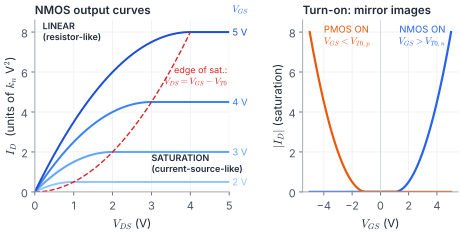
Fig. 0.1 Left: each curve rises like a resistor (linear), then goes flat like a current source (saturation). The dashed red parabola is the border between them. Right: the NMOS turns on for positive $V_{GS}$, the PMOS for negative $V_{GS}$, a perfect mirror image.
Finding the region: the 3-check recipe
Is it ON? NMOS: $V_{GS} > V_{T0,n}$. PMOS: $|V_{GS}| > |V_{T0,p}|$. If not, $I_D = 0$, stop.
Compute the overdrive $V_{ov} = V_{GS} - V_{T0}$ (use magnitudes for the PMOS).
With signed PMOS voltages, every "$\ge$" of the NMOS becomes "$\le$" because everything is negative. If you ever feel unsure, switch to magnitudes (reference card) and the rule is identical to the NMOS.
0.2 The VTC and its five numbers
The voltage transfer characteristic (VTC) is simply the graph of $V_{out}$ against $V_{in}$. For an inverter it starts high, drops, and ends low. Five numbers describe it:
Symbol
Name
How to find it on the graph
$V_{OH}$
output high
the flat top (input = 0)
$V_{OL}$
output low
the flat bottom (input = $V_{DD}$)
$V_{IL}$
input low (max)
first point where slope $= -1$
$V_{IH}$
input high (min)
second point where slope $= -1$
$V_{th}$
switching threshold
where the VTC crosses the line $V_{out}=V_{in}$
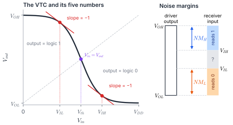
Fig. 0.2 Left: the five numbers on a VTC. Right: noise margins. The driver promises at least $V_{OH}$ for a "1"; the receiver accepts anything above $V_{IH}$ as a "1". The gap between them is the noise a "1" can survive. The grey "?" band is forbidden: the receiver cannot decide.
"Low margin uses the lows, high margin uses the highs."
Why exactly slope = −1?
Noise $\Delta$ on the input appears at the output as $|\text{slope}|\cdot\Delta$. Where $|\text{slope}| \lt 1$ the noise shrinks (safe: a valid logic level). Where $|\text{slope}| > 1$ it grows (unsafe: the transition zone). The two slope = −1 points are exactly the borders between "safe" and "unsafe", so they define $V_{IL}$ and $V_{IH}$.
0.3 The two pieces of maths you need
(a) Implicit differentiation (Lecture 23)
On the VTC, $V_{out}$ is a function of $V_{in}$. Differentiate an equation with respect to $V_{in}$. Then every $V_{out}$ term gets a factor $\frac{dV_{out}}{dV_{in}}$ (chain rule). This is the same as $y$ in $\frac{d}{dx}(y^2) = 2y\,y'$:
0.1An NMOS has $V_{T0,n}=0.6$ V and $k_n=200\ \mu$A/V². It is biased at $V_{GS}=1.5$ V, $V_{DS}=0.5$ V. Which region, and what is $I_D$?
0.2In an inverter with $V_{DD}=3.3$ V, the PMOS has $V_{T0,p}=-0.7$ V and $k_p=80\ \mu$A/V². With $V_{in}=1.0$ V and $V_{out}=2.9$ V, find $V_{GS,p}$, $V_{DS,p}$, the region and $|I_D|$.
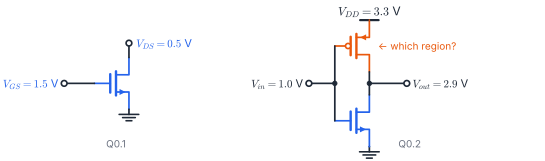
0.3Differentiate $2\,(V_{in}-V_{DD}-V_{T0,p})(V_{out}-V_{DD})$ with respect to $V_{in}$.
0.4A driver gives $V_{OH}=3.3$ V, $V_{OL}=0.2$ V; the receiver has $V_{IL}=1.2$ V, $V_{IH}=1.9$ V. Find both noise margins. Which logic level is better protected?
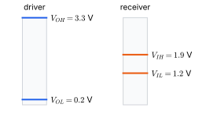
0.5Razavi Prob. 2.1, with numbers Using Razavi's Table 2.1 data ($\mu_nC_{ox}=134.3$, $\mu_pC_{ox}=38.4\ \mu$A/V², $V_{THN}=0.7$, $V_{THP}=-0.8$ V, $\lambda=0$), find $|I_D|$ for an NMOS and a PMOS, both $W/L=50/0.5$, with $|V_{GS}|=1.5$ V and $|V_{DS}|=3$ V. What does the ratio tell you?
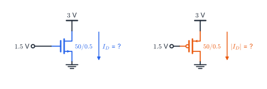
Solutions · Part 0
0.1ON, since $1.5 > 0.6$. Overdrive $V_{ov}=0.9$ V. $V_{DS}=0.5 \lt 0.9$ → linear.
$$I_D=\tfrac{200\mu}{2}\big[2(0.9)(0.5)-0.5^2\big]=100\mu\times0.65=\text{\textcolor{#059669}{\textbf{65 µA}}}$$
0.2$V_{GS,p}=1.0-3.3=-2.3$ V, $V_{DS,p}=2.9-3.3=-0.4$ V. In magnitudes: $|V_{ov}|=2.3-0.7=1.6$ V and $|V_{DS}|=0.4\lt 1.6$ → linear.
$$|I_D|=\tfrac{80\mu}{2}\big[2(1.6)(0.4)-0.4^2\big]=40\mu\times1.12=\text{\textcolor{#059669}{\textbf{44.8 µA}}}$$
0.3Product rule; only $V_{out}$ carries the chain-rule factor:
$$2\left[(V_{in}-V_{DD}-V_{T0,p})\frac{dV_{out}}{dV_{in}}+(V_{out}-V_{DD})\right]$$
This is exactly the middle term you meet in the $V_{IL}$ derivation (§1.5).
0.4$NM_L=1.2-0.2=$ 1.0 V, $NM_H=3.3-1.9=$ 1.4 V. The logic 1 is better protected.
0.5Both are saturated ($|V_{DS}|=3$ V is larger than both overdrives).
NMOS: $k_n=134.3\mu\times100=13.43$ mA/V², $\ I_D=\tfrac{13.43\text{m}}{2}(1.5-0.7)^2=$ 4.30 mA.
PMOS: $k_p=3.84$ mA/V², $\ |I_D|=\tfrac{3.84\text{m}}{2}(1.5-0.8)^2=$ 0.94 mA.
The same-size PMOS gives about 4.6× less current (3.5× from mobility, the rest from its larger threshold). This is the whole reason the PMOS in an inverter is drawn wider (Part 2).
Part 1 · Lecture 23
The CMOS inverter VTC
Two complementary switches, five regions, and the slope = −1 derivations.
Big idea: the NMOS and PMOS are in a tug-of-war over $V_{out}$; the input decides who is stronger.
Read the four terminal voltages off the circuit
Draw the two "saturation boundary" lines
Name the region of each transistor in A–E
Derive $V_{IL}$ and $V_{IH}$ step by step
Check your answer with a one-line shortcut
Explain why $V_{OH}=V_{DD}$ and $V_{OL}=0$ exactly
1.1 The circuit
Two transistors, gates joined (that is the input), drains joined (that is the output). The PMOS sits on top and can pull the output up to $V_{DD}$; the NMOS sits underneath and can pull it down to ground. The same current flows through both: $i_{D,p}=i_{D,n}$ whenever nothing else draws current from the output.
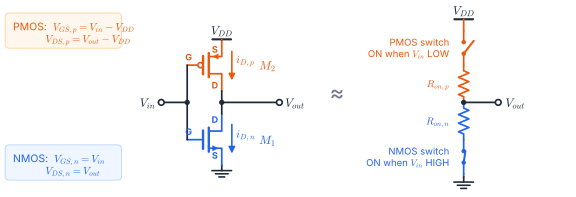
Fig. 1.1 Left: the CMOS inverter with gate (G), drain (D) and source (S) marked. The PMOS source is at $V_{DD}$; the NMOS source is at ground. Arrows show the drain current flowing from $V_{DD}$, through both devices, to ground. Right: the lecture's "non-ideal switch" model: each transistor is a switch with an on-resistance, and in steady state only one switch is closed.
Reading the terminal voltages off the figure is step one of every CMOS question:
Remember each region as a tiny picture: a transistor that is off is an open switch, a linear one is a resistor, a saturated one is a current source.
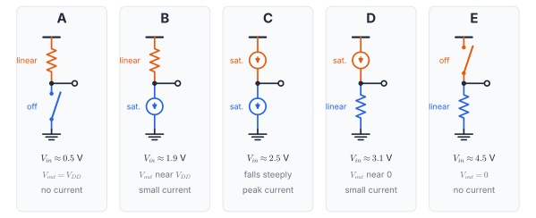
open switch = OFFresistor = LINEARcurrent source = SATURATEDorange = PMOS, blue = NMOS
Fig. 1.2 The five snapshots A–E. In A the NMOS is open, so the PMOS "resistor" just connects the output to $V_{DD}$. In B the NMOS wakes up as a weak current source and drags the output slightly down. In C both are current sources fighting each other, so the output falls steeply. D and E are the mirror image.
1.3 The two saturation boundaries
Each transistor's "edge of saturation" is a straight line on the $(V_{in},V_{out})$ plane. Drawing them tells you the regions without any algebra.
NMOS saturated needs $V_{DS,n}\ge V_{GS,n}-V_{T0,n}$, i.e.
$$\boxed{V_{out}\ \ge\ V_{in}-V_{T0,n}}\qquad\text{(NMOS saturated ABOVE this line)}$$
Both lines have slope 1. The NMOS line starts at $V_{in}=V_{T0,n}$ on the axis; the PMOS line is the same line shifted up by $|V_{T0,p}|$.
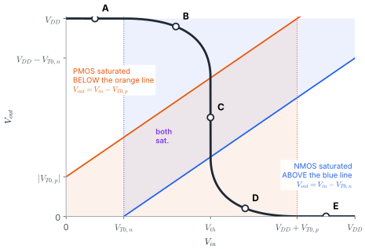
Fig. 1.3 The lecture's hatched map, computed exactly ($V_{DD}=5$ V, $V_T=\pm1$ V, $k_R=1$). Blue area: NMOS saturated. Orange area: PMOS saturated. Where both overlap (the band between the lines), both are saturated, and that is where the VTC falls through C.
1.4 The five regions
Point
Input range
NMOS
PMOS
What you get
A
$V_{in}\lt V_{T0,n}$
off
linear
$V_{OH}=V_{DD}$
B
$V_{T0,n}\le V_{in}\lt V_{th}$
saturated
linear
$V_{IL}$ lies here
C
$V_{in}=V_{th}$
saturated
saturated
$V_{th}$ (Lecture 24)
D
$V_{th}\lt V_{in}\le V_{DD}+V_{T0,p}$
linear
saturated
$V_{IH}$ lies here
E
$V_{in}>V_{DD}+V_{T0,p}$
linear
off
$V_{OL}=0$
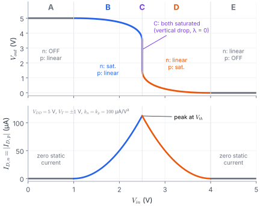
Fig. 1.4 Top: the VTC coloured by region. Bottom: the current through the inverter. It is zero at both ends, so a CMOS inverter uses no static power. It peaks at $V_{th}$, where both devices conduct hard.
Memory trick: "weakly on = saturated"
The transistor that is only just on (near its threshold) is saturated. The transistor that is strongly on holds the output near its own rail, so it is linear. In B the NMOS is only just on. In D the PMOS is only just on.
Chant it
NMOS first: "Off-Lin, Sat-Lin, Sat-Sat, Lin-Sat, Lin-Off". The middle three read the same backwards around C.
Why $V_{OH}=V_{DD}$ and $V_{OL}=0$ exactly
At A the NMOS is off, so the current is zero. A linear PMOS carrying zero current has zero voltage across it (a resistor with no current), so $V_{out}=V_{DD}$. At E the same argument with roles swapped gives $V_{out}=0$. A resistor-load inverter cannot do this: its NMOS is still conducting at $V_{in}=V_{OH}$, so $V_{OL}>0$.
Fig. 1.5 What we are hunting: the two points where a line of slope −1 just touches the VTC (numbers from Worked example 23.1).
Equate the currents. Write NMOS saturation formula = PMOS linear formula. Divide both sides by $k_p/2$:
$$k_R(V_{in}-V_{T0,n})^2 = 2\underbrace{(V_{in}-V_{DD}-V_{T0,p})}_{V_{GS,p}-V_{T0,p}}\underbrace{(V_{out}-V_{DD})}_{V_{DS,p}}-(V_{out}-V_{DD})^2 \qquad \text{\textcircled{1}}$$
Differentiate with respect to $V_{in}$ (chain rule, §0.3) and cancel the common 2:
$$k_R(V_{in}-V_{T0,n})=(V_{in}-V_{DD}-V_{T0,p})\frac{dV_{out}}{dV_{in}}+(V_{out}-V_{DD})-(V_{out}-V_{DD})\frac{dV_{out}}{dV_{in}}$$
Put $V_{in}=V_{IL}$ and $\frac{dV_{out}}{dV_{in}}=-1$:
$$k_R(V_{IL}-V_{T0,n})=-V_{IL}+V_{DD}+V_{T0,p}+2V_{out}-2V_{DD}$$
Collect the $V_{IL}$ terms on the left as $(1+k_R)V_{IL}$:
$$\boxed{V_{IL}=\frac{2V_{out}+V_{T0,p}-V_{DD}+k_RV_{T0,n}}{1+k_R}}\qquad\text{\textcircled{2}}$$
Solve ① and ② together. Rearrange ② for $V_{out}$, substitute into ①, and you get a quadratic in $V_{IL}$. Keep the root between $V_{T0,n}$ and $V_{th}$.
$$V_{out}\big|_{V_{IL}}=\tfrac12\big[(1+k_R)V_{IL}+V_{DD}-V_{T0,p}-k_RV_{T0,n}\big]$$
Equate the currents with the roles swapped:
$$k_R\big[2(V_{in}-V_{T0,n})V_{out}-V_{out}^2\big]=(V_{in}-V_{DD}-V_{T0,p})^2\qquad\text{\textcircled{3}}$$
Differentiate and cancel the 2s:
$$k_R\left[(V_{in}-V_{T0,n})\frac{dV_{out}}{dV_{in}}+V_{out}-V_{out}\frac{dV_{out}}{dV_{in}}\right]=V_{in}-V_{DD}-V_{T0,p}$$
Put slope $=-1$: $\;k_R\left[-V_{IH}+V_{T0,n}+2V_{out}\right]=V_{IH}-V_{DD}-V_{T0,p}$
Solve ③ and ④ together for $V_{IH}$ and $V_{out}\big|_{V_{IH}}$.
Telling ② and ④ apart
Both have $1+k_R$ underneath and $2V_{out}$ on top. In ② ($V_{IL}$) $k_R$ multiplies only $V_{T0,n}$. In ④ ($V_{IH}$) $k_R$ multiplies $(2V_{out}+V_{T0,n})$, because at D the NMOS is linear and its current depends on $V_{out}$.
Worked example 23.1 · the lecture method, start to finish
Read it as a weighted average of $V_{T0,n}$ (NMOS turns on) and $V_{DD}+V_{T0,p}$ (PMOS turns off). For $k_R=2$: $\rho_{IL}=(2\sqrt{10}-2)/12=0.360$, so $V_{IL}=(1+0.360\times4)/1.360=1.795$ V ✓. For $k_R=1$ you get $\rho=3/5,\ 1,\ 5/3$, the symmetric results of Lecture 24. In an exam show the lecture method; use this to check.
Your turn · Part 1 (solutions on the next page)
1.1Inverter tutorial Q3 Find $V_{OH}$, $V_{OL}$, $V_{IL}$, $V_{IH}$ and both noise margins.
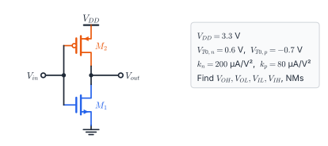
1.2For the inverter of 1.1, the four marked points lie on its VTC. Name the region of each transistor at each point, using only the boundary lines of §1.3.
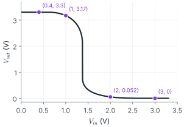
1.3Razavi §3.2–3.3 idea Explain without equations why $V_{OL}=0$ exactly in the CMOS inverter, but $V_{OL}>0$ in the resistive-load inverter on the right.
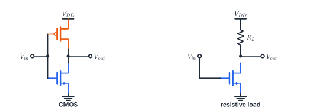
1.4Razavi Fig. 3.19(b) idea The PMOS gate is now tied to ground instead of the input ("pseudo-NMOS"). Find $V_{OL}$ and the static power when $V_{in}=V_{DD}$. Why does a real CMOS inverter beat this?
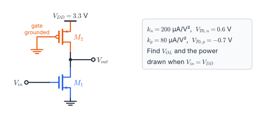
Solutions · Part 1
1.1$V_{OH}=3.3$ V and $V_{OL}=0$ V (CMOS rails). $k_R=200/80=2.5$. $V_{IL}$: ② gives $V_{out}=\tfrac12[3.5V_{IL}+3.3+0.7-1.5]=1.75V_{IL}+1.25$. Into ①: quadratic with root $V_{IL}=1.065$ V ($V_{out}=3.113$ V). $V_{IH}$: ④ gives $3.5V_{IH}=2.6+2.5(2V_{out}+0.6)$, so $V_{out}=0.7V_{IH}-0.82$. Into ③: $V_{IH}=1.553$ V ($V_{out}=0.267$ V). $NM_L=1.065$ V, $NM_H=3.3-1.553=1.747$ V. Shortcut check: $\rho_{IL}=0.3025$ → $V_{IL}=(0.6+0.3025\times2.6)/1.3025=1.065$ ✓.
1.2Boundaries: NMOS sat. if $V_{out}\ge V_{in}-0.6$; PMOS sat. if $V_{out}\le V_{in}+0.7$.
$(V_{in},V_{out})$
NMOS
PMOS
Point
(0.4, 3.3)
off ($0.4\lt 0.6$)
linear ($3.3>1.1$)
A
(1.0, 3.170)
sat. ($3.17\ge0.4$)
linear ($3.17>1.7$)
B
(2.0, 0.052)
linear ($0.052\lt 1.4$)
sat. ($0.052\le2.7$)
D
(3.0, 0)
linear
off ($3.0>3.3-0.7$)
E
1.3CMOS: at $V_{in}=V_{DD}$ the PMOS is off, so no current can flow anywhere. A linear NMOS with zero current has zero $V_{DS}$, so $V_{out}=0$. Resistive load: the resistor is always connected to $V_{DD}$, so current flows and the output settles where $(V_{DD}-V_{out})/R_L=I_{D,n}$, which needs $V_{out}>0$. The same argument at $V_{in}=0$ gives $V_{OH}=V_{DD}$ for CMOS.
1.4With its gate at 0 V the PMOS is always on: $|V_{GS,p}|=3.3$ V, $|V_{ov}|=2.6$ V. Guess PMOS saturated (output low): $|I_p|=\tfrac{80\mu}{2}(2.6)^2=270.4\ \mu$A. NMOS ($V_{GS}=3.3$, $V_{ov}=2.7$) is linear:
$$100\mu\big[2(2.7)V-V^2\big]=270.4\mu\ \Rightarrow\ V^2-5.4V+2.704=0\ \Rightarrow\ \text{\textcolor{#059669}{\textbf{$V_{OL}=0.559$ V}}}$$
Check: PMOS $|V_{DS}|=2.74\ge2.6$ ✓ saturated. Static power $=3.3\times270.4\mu=$ 0.89 mW, burned all the time the output is low. In real CMOS the PMOS switches off, so $V_{OL}=0$ and the static power is zero.
Part 2 · Lecture 24
Switching threshold, sizing and the symmetric inverter
One square root gives $V_{th}$. Run it backwards to size the transistors.
Big idea: $V_{th}$ is where the tug-of-war is a tie, so it moves towards the weaker side's threshold.
Derive $V_{th}$ (and pick the right sign)
Size $(W/L)_p$ for any target $V_{th}$
Why the PMOS is about 2.5× wider
The symmetric $3/8$ and $5/8$ results
Read a CMOS layout
Use the inverter as an amplifier (Razavi)
2.1 Deriving $V_{th}$ (point C: both saturated)
Equate the currents, both saturated:
$$\frac{k_n}{2}(V_{GS,n}-V_{T0,n})^2=\frac{k_p}{2}(V_{GS,p}-V_{T0,p})^2\ \Rightarrow\ k_R(V_{in}-V_{T0,n})^2=(V_{in}-V_{DD}-V_{T0,p})^2$$
Put $V_{in}=V_{th}$ and take square roots: $\sqrt{k_R}\,(V_{th}-V_{T0,n})=\pm(V_{th}-V_{DD}-V_{T0,p})$.
Which sign? The left side is positive (NMOS on). The bracket on the right is $V_{GS,p}-V_{T0,p}$, which is negative (PMOS on). So take the minus sign: $\sqrt{k_R}(V_{th}-V_{T0,n})=V_{DD}+V_{T0,p}-V_{th}$.
Collect the $V_{th}$ terms and divide top and bottom by $\sqrt{k_R}$:
$$\boxed{V_{th}=\frac{V_{T0,n}+\sqrt{1/k_R}\,(V_{DD}+V_{T0,p})}{1+\sqrt{1/k_R}}}$$
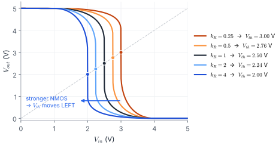
Fig. 2.1 VTCs for five values of $k_R$ ($V_{DD}=5$ V, $V_T=\pm1$ V); dots mark $V_{th}$. A stronger NMOS ($k_R>1$) wins the tug-of-war earlier, so the curve shifts left; a stronger PMOS shifts it right.
Read the formula as a weighted average
$V_{th}$ always lies between $V_{T0,n}$ (where the NMOS starts) and $V_{DD}+V_{T0,p}$ (where the PMOS stops). The weight on the PMOS end is $\sqrt{1/k_R}$. As $k_R\to\infty$, $V_{th}\to V_{T0,n}$; as $k_R\to0$, $V_{th}\to V_{DD}+V_{T0,p}$.
Cancel $(V_{DD}-2V_T)$: $\ \boxed{V_{IL}=\tfrac18(3V_{DD}+2V_T)}$. The same steps on ③ and ④ give $\boxed{V_{IH}=\tfrac18(5V_{DD}-2V_T)}$.
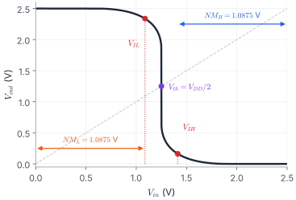
Fig. 2.2 A symmetric inverter ($V_{DD}=2.5$ V, $V_T=0.6$ V). The VTC is point-symmetric about $(V_{DD}/2,\,V_{DD}/2)$, so the two noise margins are equal. That is the reason to build it this way.
Low gets 3, high gets 5, both over 8. The $\pm2V_T$ signs are whatever makes the pair add to $V_{DD}$.
Why the margins are equal: $NM_H=V_{DD}-V_{IH}=V_{DD}-(V_{DD}-V_{IL})=V_{IL}=NM_L$.
2.4 Layout
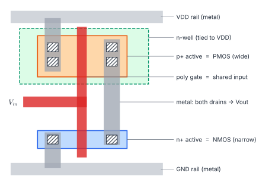
Fig. 2.3 CMOS inverter layout, top view (after the lecture sketch). One vertical poly line is the shared gate ($V_{in}$). Where it crosses the p⁺ region (inside the n-well), it makes the PMOS. Where it crosses the n⁺ region, it makes the NMOS. The sources connect to the $V_{DD}$ and GND rails. A metal strap joins the two drains to make $V_{out}$. The p⁺ region is wider: this is the sizing of §2.2.
2.5 The inverter as an amplifier (Razavi §3.3.4)
Bias the inverter exactly at $V_{th}$: both transistors are saturated. A small rise in $V_{in}$ makes the NMOS pull more current down and the PMOS push less current up. Both effects push $V_{out}$ down, so they add. Razavi calls this a "CS stage with active load" (complementary CS stage):
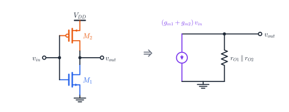
Fig. 2.4 For small signals the two devices are in parallel: transconductances add, and so do the output conductances (Razavi Fig. 3.20).
Fig. 2.5 With channel-length modulation ($\lambda\ne0$), the VTC at C is steep but not vertical. The gain is large only in a narrow window around $V_{th}$. With $\lambda=0$ the gain would be infinite, which is why the ideal VTC drops vertically.
Your turn · Part 2 (solutions on the next page)
2.1Tutorial 5 Q2 (2024–25) Find $V_{th}$ and the noise margins.
2.2Compre 2024–25 Q4(b) The inverter is sized for equal rise and fall delays. Find the noise margins. (Part 3 shows why equal delays mean $k_n=k_p$.)
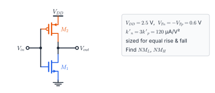
2.3Find $\beta=(W/L)_p/(W/L)_n$ for $V_{th}=V_{DD}/2$.
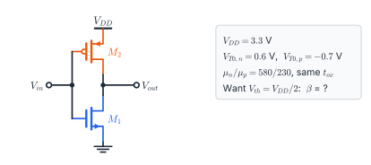
2.4Find the new $V_{th}$. Do the margins stay equal, or does one grow at the other's expense?
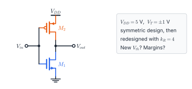
2.5Prove $V_{IL}+V_{IH}=V_{DD}$ for the symmetric inverter without the closed forms, using the 180° symmetry of the VTC.
2.6Razavi §3.3.4, Eq. (3.48), Table 2.1 (a) Choose $(W/L)_p$ so that $V_{th}=1.5$ V. (b) Find the small-signal gain at $V_{th}$ using $A_v=-(g_{m1}+g_{m2})(r_{O1}\|r_{O2})$.
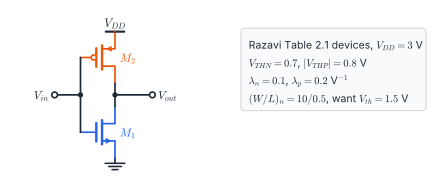
2.7Razavi Table 2.1 Both devices drawn the same size. Find $V_{th}$ and say which way it moved from $V_{DD}/2$ and why.
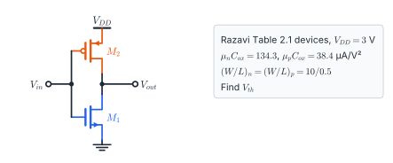
Solutions · Part 2
2.1$k_n=60\times8=480$, $k_p=25\times12=300\ \mu$A/V², so $k_R=1.6$ and $\sqrt{1/k_R}=0.7906$.
$$V_{th}=\frac{0.6+0.7906\times2.6}{1.7906}=\text{\textcolor{#059669}{\textbf{1.483 V}}}$$
$V_{IL}$: ② gives $V_{out}=\tfrac12(2.6V_{IL}+3.04)$; into ①: $V_{IL}=1.199$ V $=NM_L$. $V_{IH}$: $V_{IH}=1.696$ V, so $NM_H=1.604$ V.
The printed key gives 1.48, 1.16, 1.69 and 1.61 V. A brute-force simulation of the VTC confirms 1.199 V for $V_{IL}$, so the key's 1.16 is slightly off.
2.2Equal delays need equal strengths, $k_n=k_p$, so $(W/L)_p=3(W/L)_n$ and $k_R=1$ with matched thresholds: the inverter is symmetric.
$V_{IL}=(7.5+1.2)/8=1.0875$ V, $V_{IH}=(12.5-1.2)/8=1.4125$ V, so $NM_L=NM_H=1.0875$ V and $V_{th}=1.25$ V.
2.3
$$k_R=\left(\frac{1.65-0.7}{1.65-0.6}\right)^2=0.8186,\qquad \beta=\frac{(W/L)_p}{(W/L)_n}=\frac{\mu_n}{\mu_p\,k_R}=\frac{2.522}{0.8186}=\text{\textcolor{#059669}{\textbf{3.08}}}$$
The larger $|V_{T0,p}|$ weakens the PMOS further, so it must be even wider than 2.5×.
2.4$V_{th}=\dfrac{1+0.5\times4}{1.5}=$ 2.0 V (moved left). Shortcut: $V_{IL}=1.512$ V and $V_{IH}=2.219$ V, so $NM_L=1.51$ V, $NM_H=2.78$ V. No longer equal: $NM_H$ grew while $NM_L$ shrank from 1.75 V. The symmetric design maximises the worse of the two margins.
2.5In the symmetric case the PMOS is the NMOS with every voltage measured from the other rail. So if $(V_{in},V_{out})$ lies on the VTC, so does $(V_{DD}-V_{in},\,V_{DD}-V_{out})$: a 180° rotation about $(V_{DD}/2,V_{DD}/2)$. A rotation by 180° keeps slopes unchanged, so it maps the slope −1 point $V_{IL}$ to the other slope −1 point $V_{IH}$. Therefore $V_{IH}=V_{DD}-V_{IL}$.
2.6(a) From §2.2: $k_R=\left(\dfrac{3-0.8-1.5}{1.5-0.7}\right)^2=0.7656$. Then $k_n=134.3\mu\times20=2.686$ mA/V² and $k_p=k_n/k_R=3.508$ mA/V², so
$$(W/L)_p=\frac{3.508\text{m}}{38.4\mu}=91.4\ \Rightarrow\ \text{\textcolor{#059669}{\textbf{about } 45.7/0.5}}$$
(b) $I_D=\tfrac{k_n}{2}(0.8)^2=0.860$ mA. $g_{m1}=k_n(0.8)=2.149$ mS, $g_{m2}=k_p(0.7)=2.456$ mS. $r_{O1}=1/(0.1I_D)=11.63$ kΩ, $r_{O2}=1/(0.2I_D)=5.82$ kΩ, parallel $=3.88$ kΩ.
$$A_v=-(4.605\text{ mS})(3.88\text{ k}\Omega)\approx\text{\textcolor{#059669}{\textbf{−17.9}}}$$
This finite gain is why a real VTC is steep but not vertical at C.
2.7Same $W/L$, so $k_R=\mu_nC_{ox}/\mu_pC_{ox}=134.3/38.4=3.50$ and $\sqrt{1/k_R}=0.535$.
$$V_{th}=\frac{0.7+0.535\times(3-0.8)}{1.535}=\text{\textcolor{#059669}{\textbf{1.22 V}}}$$
It moved left of 1.5 V: the same-size NMOS is much stronger, so it wins the tug-of-war early.
Part 3 · Lecture 25
Switching characteristics and delay
The output is a capacitor. The transistors are the currents that charge and discharge it.
Big idea: delay = (charge to move) ÷ (current available), i.e. $\tau\approx C\,\Delta V/I$.
List every capacitor that loads $V_{out}$
Define $\tau_{PHL}$, $\tau_{PLH}$, $\tau_P$, rise and fall
Average-current method (quick)
Exact method by integration
Size for equal rise and fall
Ring oscillators and dynamic power
3.1 Where the load capacitance comes from
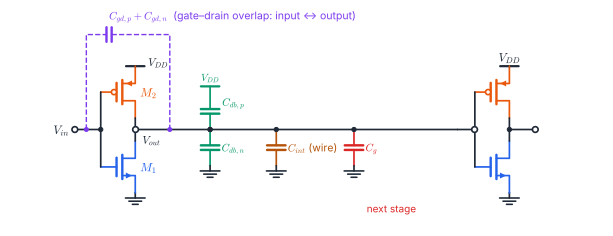
Fig. 3.1 An inverter driving a second inverter. Every capacitor with one plate on $V_{out}$ is part of the load. These are the gate–drain overlaps (purple), the drain junctions (green), the wire (amber) and the next stage's gate (red). $C_{gs}$ sits between the gate and a fixed rail, so it loads the input, not the output.
Fig. 3.2 Left: the source and drain diffuse a distance $L_D$ under the gate; that overlap gives $C_{gd}=C_{gs}=C_{ox}WL_D$ ($=WC_{ov}$ in Razavi). Right: Razavi's bias dependence. In saturation the channel connects to the source, so $C_{GD}$ is overlap only.
From Razavi §2.4.2: the junction capacitance is $C_{db}=C_j\cdot(\text{drain area})+C_{jsw}\cdot(\text{drain perimeter})$. For a drain of width $W$ and length $E$: $C_{db}=WEC_j+2(W+E)C_{jsw}$. A folded layout (Razavi Ex. 2.10) halves the drain area and so shrinks $C_{db}$.
3.2 The lumped model
All the physics becomes one node equation (KCL at $V_{out}$). The current into the capacitor is the PMOS current in, minus the NMOS current out.
Fig. 3.3 Falling output (left): the input jumps high, the PMOS turns off, and the NMOS drains the capacitor to ground. Rising output (right): the input drops, the NMOS turns off, and the PMOS fills the capacitor from $V_{DD}$. Only one transistor works in each case.
3.3 Definitions
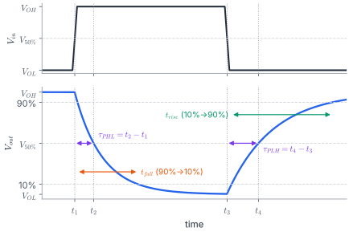
Fig. 3.4 Delays are measured between the 50 % points of input and output. Rise and fall times are measured on the output alone, between 10 % and 90 %.
Likewise $\tau_{PLH}=C_{load}\Delta V_{LH}/I_{avg,LH}$ with $\Delta V_{LH}=V_{50\%}-V_{OL}$ and the PMOS current averaged at $V_{out}=V_{OL}$ and $V_{out}=V_{50\%}$ (with $V_{in}=V_{OL}$).
Pick the right region at each endpoint
At the start of the fall ($V_{out}=V_{OH}$): $V_{DS,n}=V_{OH}\ge V_{OH}-V_{T0,n}$, so the NMOS is saturated. At $V_{50\%}$: usually $V_{50\%}\lt V_{OH}-V_{T0,n}$, so it is linear. Using the saturation formula at both ends is the most common mistake.
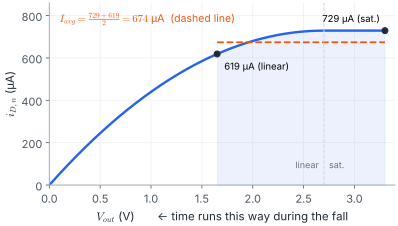
Fig. 3.5 The NMOS current during the fall (Worked example 25.2 numbers). The method replaces the real curve over the shaded range by the mean of its two end values.
3.5 Method 2: exact integration
Step the input from $V_{OL}$ to $V_{OH}$ at $t_1$. As $V_{out}$ falls, the NMOS passes through two regions, so the integral splits in two:
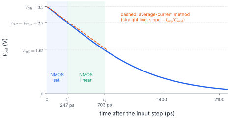
Fig. 3.6 The exact $V_{out}(t)$. From $t_1$ to $t_1'$ the NMOS is saturated: constant current, so a straight line. From $t_1'$ to $t_2$ it is linear and the discharge curves (current falls as $V_{out}$ falls).
Now $i_{D,n}=\frac{k_n}{2}\big[2(V_{OH}-V_{T0,n})V_{out}-V_{out}^2\big]$. Write $a=2(V_{OH}-V_{T0,n})$ so the bracket is $V_{out}(a-V_{out})$, and use the integral of §0.3:
For CMOS ($V_{OH}=V_{DD}$, $V_{OL}=0$) both are $\dfrac{C}{k(V_{DD}-|V_T|)}\left[\dfrac{2|V_T|}{V_{DD}-|V_T|}+\ln\!\left(\dfrac{4(V_{DD}-|V_T|)}{V_{DD}}-1\right)\right]$ with the right transistor's $k$ and $V_T$.
Say it out loud
"C over kV, times [sat bit + log bit]." The sat bit is $2V_T/(V_{DD}-V_T)$. The log bit is $\ln(4\cdot\text{overdrive}/V_{DD}-1)$.
Average current, HL. At $V_{out}=3.3$ (sat.): $100\mu(2.7)^2=729\ \mu$A. At $V_{out}=1.65$ (linear): $100\mu[2(2.7)(1.65)-1.65^2]=619\ \mu$A. Average $674\ \mu$A, so $\tau_{PHL}=0.3\text{p}\times1.65/674\mu=\mathbf{0.734}$ ns.
Exact, HL. $\dfrac{0.3\text{p}}{200\mu\times2.7}=0.556$ ns, times $\Big[\tfrac{1.2}{2.7}+\ln\big(\tfrac{10.8}{3.3}-1\big)\Big]=0.444+0.821$, gives $\tau_{PHL}=0.247+0.456=\mathbf{0.703}$ ns.
Exact, LH. $\dfrac{0.3\text{p}}{80\mu\times2.6}\Big[\tfrac{1.4}{2.6}+\ln\big(\tfrac{10.4}{3.3}-1\big)\Big]=1.442\times(0.538+0.766)$, so $\tau_{PLH}=\mathbf{1.88}$ ns (average-current method: 1.96 ns). Then $\tau_P=\mathbf{1.29}$ ns.
The average-current method overestimates by about 4 %. That is good enough for most questions, but use whichever method the question names.
3.6 What the formulas tell a designer
Both delays have the form $\tau\propto\dfrac{C_{load}}{k\,(V_{DD}-|V_T|)}$. Razavi's one-line estimate (§17.1) is the same idea: $T_d\approx C\,V_{DD}/I$. To go faster:
Increase $k$: make $W/L$ larger. But wider devices add their own $C_{db}$ and load the previous stage, so the gain is limited.
Increase $V_{DD}$: faster, but dynamic power $\propto CV_{DD}^2f$ rises (§3.8).
Equal rise and fall need $k_p=k_n$ (with matched thresholds): the same $(W/L)_p\approx2.5(W/L)_n$ as Lecture 24's symmetric inverter. That is why "sized for equal delays" in Compre Q4 means "symmetric".
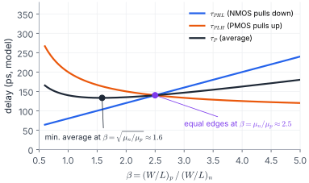
Fig. 3.7 Delay against PMOS/NMOS sizing when the load is mostly the inverter's own and the next stage's capacitance (simple model). A wider PMOS speeds up $\tau_{PLH}$ but adds capacitance, so $\tau_{PHL}$ rises. Equal edges happen at $\beta=\mu_n/\mu_p\approx2.5$; the average is smallest a little earlier, at $\beta=\sqrt{\mu_n/\mu_p}\approx1.6$. Equal edges and minimum average delay are slightly different goals.
3.7 Ring oscillator (Razavi §15.2)
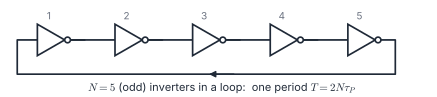
Fig. 3.8 An odd number of inverters in a loop cannot settle: each stage flips the next. An edge must travel round the loop twice (once as a rising edge, once as a falling edge) for one full period.
Razavi: three stages give a period of $6T_D$, five stages give $f=1/(10T_D)$.
3.8 Dynamic power
Each time the output rises, the PMOS takes charge $Q=C_{load}V_{DD}$ from the supply. That costs energy $QV_{DD}=C_{load}V_{DD}^2$. Half is stored in the capacitor. Half is burned in the PMOS. When the output falls, the NMOS burns the stored half. So each full $0\to1\to0$ cycle costs $C_{load}V_{DD}^2$:
Memorise
$$P_{dyn}=C_{load}\,V_{DD}^2\,f\qquad\text{(one full cycle per period; static power}\approx0\text{ for CMOS)}$$
3.2Derive segment 2 of §3.5 yourself, starting from $C\,dV_{out}/dt=-i_{D,n}$ in the linear region. Check that you reach the ln term.
3.3What $(W/L)_p$ multiplier makes $\tau_{PLH}=\tau_{PHL}$? Assume $C_{load}$ does not change.
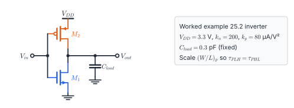
3.4Razavi Prob. 2.11(b), numbers added An NMOS has $W/L=50/0.5$, $\mu_nC_{ox}=134.3\ \mu$A/V², $V_{TH}=0.7$ V and $\lambda=\gamma=0$. Its source is grounded and its drain is node $X$. $C_1=1$ pF connects $X$ to ground and starts at 1 V. At $t=0$ the gate steps from 0 to 3 V. Sketch $V_X(t)$ and find when $V_X=0.5$ V. (Figure (b) below.)
3.5Razavi Prob. 2.11(a), numbers added Same device, but now $V_{DD}=3$ V is on the drain and $C_1$ (initially 1 V) is on the source. The gate steps from 0 to 3 V. Sketch $V_X(t)$, give its final value, and find when $V_X=2.0$ V.
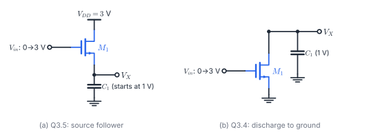
3.6Razavi §15.2 A ring of 5 inverters, each with $\tau_P=50$ ps, oscillates. What is its frequency? (Fig. 3.8.)
3.7Razavi Prob. 2.15 style, Table 2.1 An inverter with $(W/L)_n=5/0.5$, $(W/L)_p=10/0.5$ drives an identical inverter. Use $C_{ox}=3.84$ fF/µm², $C_{GDO}=0.4$ (n) and $0.3$ (p) fF/µm, $C_j=0.56$ (n) and $0.94$ (p) fF/µm², $C_{jsw}=0.035$ (n) and $0.032$ (p) fF/µm, drain length $E=1.5$ µm, zero-bias junctions, no wire. Find $C_{load}$, then estimate the delay with $T_d\approx CV_{DD}/I$ using the NMOS saturation current ($V_{DD}=3$ V).
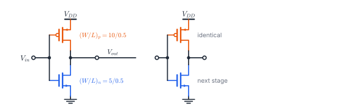
3.8Find the dynamic power, and the energy burned in the PMOS each cycle.
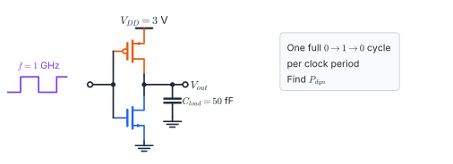
Solutions · Part 3
3.1$C_{gd,n}=3.8\times1\times0.08=0.30$ fF, $C_{gd,p}=3.8\times2.5\times0.08=0.76$ fF, $C_g=3.8\times(1+2.5)\times0.5=6.65$ fF.
$$C_{load}=0.30+0.76+2+4+5+6.65=\text{\textcolor{#059669}{\textbf{18.7 fF}}}$$
The next stage's gate dominates, closely followed by the wire. Some texts double $C_{gd}$ for the Miller effect (both ends swing in opposite directions); the lecture counts it once.
3.2See §3.5. The two keys are the partial fractions $\frac{1}{V(a-V)}=\frac1a\left(\frac1V+\frac1{a-V}\right)$ and noticing that the starting point is $V=a/2$, which kills one log.
3.3With $C_{load}$ fixed, $\tau_{PLH}\propto1/k_p$. So scale $k_p$ by $1.882/0.703=$ 2.68, i.e. $(W/L)_p$ about 2.7× its present value. (This is larger than $k_n/k_p=2.5$ because $|V_{T0,p}|>V_{T0,n}$.)
3.4$V_{GS}=3$ V and $V_{DS}\le1\lt 2.3$ V. So the device is linear the whole time. $V_X$ falls towards 0, almost like an exponential (Fig. 3.9b). This is segment 2 alone, with $V_{ov}=2.3$ V and $k_n=13.43$ mA/V²:
$$t=\frac{C}{k_nV_{ov}}\ln\frac{V_0(2V_{ov}-V)}{V(2V_{ov}-V_0)},\qquad \frac{C}{k_nV_{ov}}=32.4\text{ ps},\quad \ln\frac{1\times4.1}{0.5\times3.6}=0.823$$
so $t\approx26.6$ ps.
3.5$V_{DS}=3-V_X\ge V_{GS}-V_{TH}=2.3-V_X$ always, so the device is saturated throughout: a source follower charging $C_1$.
$$C\frac{dV_X}{dt}=\frac{k_n}{2}(2.3-V_X)^2\ \Rightarrow\ \left[\frac{1}{2.3-V}\right]_1^{V}=\frac{k_nt}{2C}\ \Rightarrow\ t=\frac{2C}{k_n}\left(\frac1{0.3}-\frac1{1.3}\right)=\text{\textcolor{#059669}{\textbf{0.38 ns}}}$$
$V_X$ rises towards $V_{in}-V_{TH}=2.3$ V but never quite reaches it, because the current dies as $V_{GS}\to V_{TH}$. (With $\gamma>0$ the final value is lower, because $V_{TH}$ rises with $V_{SB}$.)
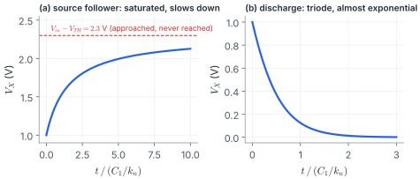
Fig. 3.9 The answers to Q3.5 (a) and Q3.4 (b), with time normalised to $C_1/k_n$. The follower slows down as it approaches its final value; the discharge is almost exponential.
3.6$T=2N\tau_P=2\times5\times50=500$ ps, so $f=2$ GHz. (The number of stages must be odd, or the ring latches instead of oscillating.)
3.7$C_{gd,n}=0.4\times5=2.0$ fF, $C_{gd,p}=0.3\times10=3.0$ fF.
$C_{db,n}=5(1.5)(0.56)+2(5+1.5)(0.035)=4.66$ fF, $\ C_{db,p}=10(1.5)(0.94)+2(10+1.5)(0.032)=14.84$ fF.
$C_g=3.84\times(5\times0.5+10\times0.5)=28.8$ fF. Total $C_{load}\approx53.3$ fF.
$I=\tfrac{134.3\mu\times10}{2}(3-0.7)^2=3.55$ mA, so $T_d\approx\dfrac{53.3\text{f}\times3}{3.55\text{m}}\approx$ 45 ps. Notice the PMOS drain junction is the second-largest term: wide devices are not free.
3.8$P=C V_{DD}^2 f=50\text{f}\times9\times10^9=$ 0.45 mW. Energy per cycle $=CV_{DD}^2=0.45$ pJ, of which 0.225 pJ is burned in the PMOS (while charging) and 0.225 pJ in the NMOS (while discharging).
Part 4 · Revision
Formula sheet and revision
Everything from Lectures 23–25 that you should be able to write from memory.
same with $n\to p$, $V_{OH}-V_{T0,n}\to V_{OH}-V_{OL}-|V_{T0,p}|$, $V_{OH}+V_{OL}\to V_{OH}-V_{OL}$
step input
Ring, power
$f=1/(2N\tau_P)$ ; $\ P=C_{load}V_{DD}^2f$
$N$ odd
Memory tricks
Regions A–E
"Off-Lin, Sat-Lin, Sat-Sat, Lin-Sat, Lin-Off" (NMOS first). Weakly on = saturated; strongly on = linear.
Pictures
Off = open switch. Linear = resistor. Saturated = current source.
$V_{IL}$ vs $V_{IH}$
Both: $1+k_R$ below, $2V_{out}$ on top. $V_{IL}$: $k_R$ only on $V_{T0,n}$. $V_{IH}$: $k_R$ on $(2V_{out}+V_{T0,n})$.
$V_{th}$ as a tug-of-war
It sits between $V_{T0,n}$ and $V_{DD}+V_{T0,p}$. The stronger side drags $V_{th}$ towards the other side's threshold.
3 + 5 = 8
Symmetric: $V_{IL}=\frac{3V_{DD}+2V_T}{8}$, $V_{IH}=\frac{5V_{DD}-2V_T}{8}$; they add to $V_{DD}$.
Delay
"C over kV, times [sat bit + log bit]". Sat bit $2V_T/(V_{DD}-V_T)$; log bit $\ln(4\cdot\text{overdrive}/V_{DD}-1)$.
Flashcards (cover the answer)
Point B: which device is saturated?
The NMOS (the PMOS is linear).
Why is $V_{OL}$ exactly 0?
The PMOS is off, so no current, so the linear NMOS has $V_{DS}=0$.
Which sign after the square root for $V_{th}$?
Minus, because $V_{GS,p}-V_{T0,p}\lt 0$.
$k_R>1$ moves the VTC…
Left (lower $V_{th}$).
$(W/L)_p$ for a symmetric inverter?
$\mu_n/\mu_p\approx580/230\approx2.5$ times $(W/L)_n$.
$V_{IL}+V_{IH}$ (symmetric)?
$V_{DD}$.
Is $C_{gs}$ part of $C_{load}$?
No. It loads the input node.
NMOS region at $V_{out}=V_{50\%}$ during the fall?
Linear (if $V_{50\%}\lt V_{OH}-V_{T0,n}$).
$t_1'-t_1$?
$2C_{load}V_{T0,n}/[k_n(V_{OH}-V_{T0,n})^2]$.
Ring of $N$ inverters: period?
$2N\tau_P$ ($N$ odd).
Gain of an inverter at $V_{th}$?
$-(g_{m1}+g_{m2})(r_{O1}\|r_{O2})$.
Energy per $0\to1\to0$ cycle?
$C_{load}V_{DD}^2$, half in each transistor.
Exam playbook
Any CMOS VTC question: compute $k_n=\mu_nC_{ox}(W/L)_n$, $k_p$ and $k_R$ first. Write the four terminal voltages, then $V_{th}$ from the boxed formula.
$V_{IL}$ / $V_{IH}$: write ① or ③, differentiate, set slope $=-1$, solve for $V_{out}$ in terms of $V_{IL}$ (or $V_{IH}$), substitute, solve the quadratic. Check with the $\rho$ shortcut. If symmetric, use the $3/8$ and $5/8$ forms directly.
Design for $V_{th}$: $k_R=\left(\frac{V_{DD}+V_{T0,p}-V_{th}}{V_{th}-V_{T0,n}}\right)^2$, then convert to $W/L$ with the mobility ratio. "Equal rise/fall" means symmetric.
Delay: write $C_{load}$, decide each transistor's region at both endpoints, then use average current or the exact formula, whichever the question asks for. Always state $V_{50\%}$.
Top 5 mistakes
Using the saturation formula at both ends of the average-current method.
Taking the $+$ sign after the square root in the $V_{th}$ derivation.
Forgetting $\frac{dV_{out}}{dV_{in}}$ on the $V_{out}$ terms when differentiating.
Mixing $\mu C_{ox}$ with $k$: always multiply by $W/L$ first.
Counting $C_{gs}$ in the load, or forgetting the next stage's gate.
Capstone problem (all three lectures)
One inverter, start to finish
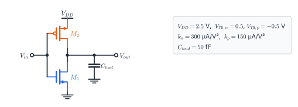
(a) $V_{OH}$, $V_{OL}$ and $V_{th}$. (b) $V_{IL}$, $V_{IH}$ and both noise margins. (c) $\tau_{PHL}$ and $\tau_{PLH}$ by the exact formulas, and $\tau_P$. (d) Check $\tau_{PHL}$ with the average-current method. (e) How would you make the edges equal, and what happens to $V_{th}$?
Solution
(a) $V_{OH}=2.5$ V, $V_{OL}=0$. $k_R=2$, $\sqrt{1/k_R}=0.707$: $V_{th}=\dfrac{0.5+0.707\times2.0}{1.707}=$ 1.121 V.
(b) ② gives $V_{out}=\tfrac12(3V_{IL}+2.0)$. Substitute into ①: $V_{IL}=0.897$ V ($V_{out}=2.346$ V).
④ gives $3V_{IH}=2.0+2(2V_{out}+0.5)$. Substitute into ③: $V_{IH}=1.268$ V ($V_{out}=0.201$ V).
So $NM_L=0.897$ V and $NM_H=2.5-1.268=1.232$ V.
Shortcut check: $\rho_{IL}=0.360$ gives $V_{IL}=(0.5+0.360\times2.0)/1.360=0.897$ V ✓.
(c) Both devices have $|V_T|=0.5$ V, so both brackets are the same:
$$\Big[\tfrac{2(0.5)}{2.0}+\ln\big(\tfrac{4(2.0)}{2.5}-1\big)\Big]=0.5+0.789=1.289$$
$$\tau_{PHL}=\frac{50\text{f}}{300\mu\times2.0}\times1.289=83.3\text{ ps}\times1.289=\textcolor{#059669}{\mathbf{107\ ps}}$$
$$\tau_{PLH}=\frac{50\text{f}}{150\mu\times2.0}\times1.289=166.7\text{ ps}\times1.289=\textcolor{#059669}{\mathbf{215\ ps}}$$
$\tau_P=\tfrac12(107+215)=$ 161 ps. The PMOS is half as strong, so the rising edge is exactly twice as slow.
(d) At $V_{out}=2.5$ V the NMOS is saturated: $150\mu(2.0)^2=600\ \mu$A. At $V_{out}=1.25$ V it is linear: $150\mu[2(2.0)(1.25)-1.25^2]=516\ \mu$A. The average is $558\ \mu$A, so $\tau_{PHL}\approx50\text{f}\times1.25/558\mu=$ 112 ps (4 % above the exact value, as expected).
(e) Make $k_p=k_n$: double $(W/L)_p$. Then $\tau_{PLH}$ drops to about 107 ps (if $C_{load}$ stays the same; in reality the wider PMOS adds some capacitance). Now $k_R=1$ with matched thresholds, so the inverter becomes symmetric: $V_{th}$ moves right to $V_{DD}/2=1.25$ V and the noise margins become equal ($V_{IL}=(7.5+1.0)/8=1.0625$ V).